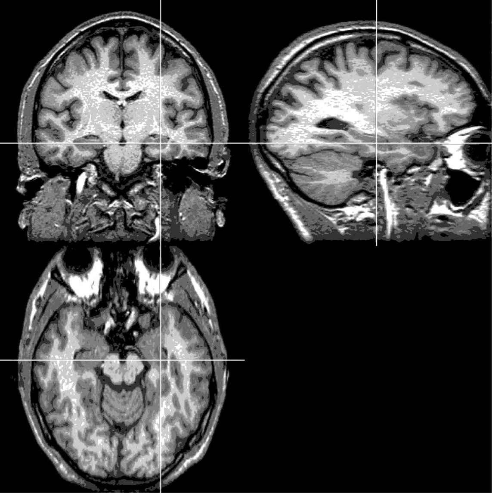
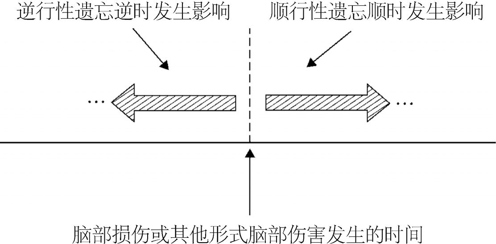
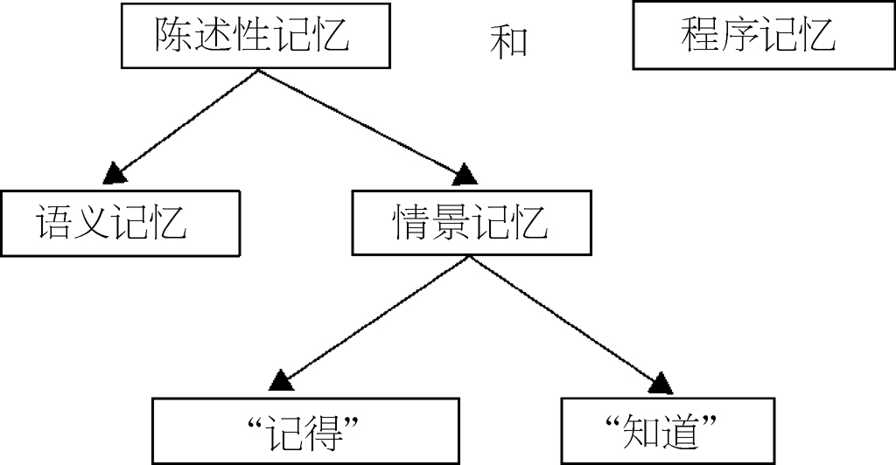
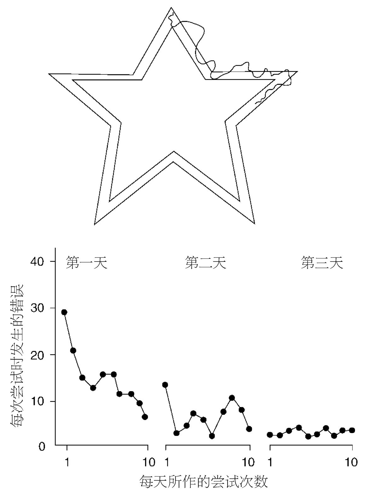

本章将探讨记忆丧失或者说“失忆”的状况，也就是记忆由于脑部的损伤而无法正常工作。本章的重点是被称为“遗忘综合征”的记忆丧失状况，我们将结合前面几章中记忆的不同组成部分对此加以探讨。我们会看到与长时记忆相关的一些隐喻，包括“印刷机”（用于创造新的长时记忆）和“图书馆”（用于存储旧的、经过整理的长时记忆）之间宽泛的通用区分。通过研究脑部受伤导致记忆受损的个体，我们已经了解了许多关于记忆运作的知识。本章将对这些重要的发现进行概述，并会讨论其他的临床状况和心理状态如何对记忆产生影响。
到目前为止，我们主要探讨了记忆的功能组件和过程，打个比方，这就是记忆的“软件”。但我们也可以从另一个层面来思考记忆，从“硬件”的角度，看看生成记忆的中枢神经系统。在我们的大脑深处，记忆在大脑中一个叫作“海马体”的部位进行分类或整合。对于新的记忆，海马体扮演了“印刷机”的角色。重要的记忆通过海马体进行“印刷”，然后在大脑皮层中永久归档（就像书一样）。大脑皮层是大脑的外层，数十亿藤蔓般错综复杂的神经元通过电脉冲和化学物质来存储信息。大脑皮层可以被看作“图书馆”，由海马体“印刷”出的重要的长时记忆（“书”）都永久存放在大脑皮层。（经过较长时间后，海马体究竟在多大程度上仍然参与提取这些记忆，这一点直到我写这本书的时候仍然存在着争议。）
大多数记忆研究的重点都放在过去经验对于人们行为、语言、感受和想象的影响。但是同样重要的是，考虑过去经历如何反映在我们的大脑活动里——尤其是在对记忆有负面影响的临床状况下。我们接下来会探讨当大脑中支持记忆的“硬件”损坏时会发生什么。

图11 大脑中与记忆相关的最重要的结构之一就是海马体（已在上面的大脑影像图中用十字线标示出来）
遗忘综合征是最为纯粹的记忆障碍的例子，这涉及某种特定的脑部损伤（通常涉及被称为海马体或间脑的大脑组成部分）。患有遗忘综合征的病人会表现出严重的顺行性遗忘 以及一定程度的逆行性遗忘 ：顺行性遗忘是指对信息记忆的遗忘发生在导致记忆丧失的脑部损伤之后，而逆行性遗忘是指信息遗忘发生在损伤之前（参见图5）。
以下是一个著名的遗忘症患者的自述。他在遭受某种特殊、少见的头部损伤后呈现了失忆的症状：

图12 顺行性遗忘是记忆障碍的一种形式，表现为无法记住损伤后发生的事件或信息。相反，逆行性遗忘这种记忆障碍形式让人们无法记住损伤之前发生的信息或事件
以下这段有趣且富有启发的文字节选自病人与心理学家韦恩· 威克格伦之间的对话。他们在美国麻省理工学院的一个房间里见面。病人听了威克格伦的名字，说道：
之后和病人聊了五分钟后，威克格伦离开了房间。又过了五分钟，威克格伦回到房间里，病人看着他就好像之前从未见过他一样，于是两个人重新相互认识。以下的对话接着发生了：
从上段描述看来，病人的所有记忆类型并非都被损坏了，他仍然保留了语言知识。例如，他能理解对方说的话，他能够说出合理的语言。那么他至少保留了部分的语义记忆（参见第二章）。另外，他的工作记忆能力也保留了下来，足以让他留意对话中所说的内容。病人具体缺乏的是经过较长时间后仍能留存信息的能力。换言之，他缺少将新信息转化为长时记忆的能力 。这是遗忘综合征最为核心的特征。
一般而言，患有遗忘综合征的人仍然保留了智力、语言能力以及短时记忆广度。但是他们的长时记忆被严重破坏了。这种破坏的性质引发了大量的争论。有些研究者认为，遗忘综合征患者的情景记忆出现了选择性的丢失（情景记忆被定义为对经历过的事件的记忆，参见第二章）。相反，另外一些研究者认为，典型的遗忘综合征体现了包括陈述性 记忆在内的更大程度的缺损（陈述性记忆是指对事实、事件和论点的记忆，人们可以回想起并有意识地表达出这种记忆。它与第二章中讨论的外显记忆之间存在很大的重合）。而对于程序记忆或内隐记忆，遗忘综合征的影响不大，也就是说，病人仍然可以有效地习得新技能，例如耍杂技或骑摩托车。
典型的遗忘综合征通常涉及海马体以及与之紧密相关的大脑区域，例如间脑中的丘脑。看起来，海马体和丘脑的损伤会阻止新的有意识记忆的形成。而当失忆症患者学习新的技能时，他们通常是在无意间学会的。有一位病人的海马体在手术中被切除了，他在努力了很多天之后，终于能够解决一个叫作“镜画”测验的智力题（参见图14）。但是，每次当他被要求完成这个任务，他都否认曾经见过这个智力题。
这一点非常重要，尤其是考虑到脑部受损伤后，记忆的不同方面会发生分离 或分裂 。这一点对于思考记忆障碍患者的治疗方法也可能有所帮助。它同时也告诉我们，在健康或未受损伤的大脑里记忆是如何组织的。具体而言，肯尼思· 克雷克曾提出一个著名的观点：对于像大脑这样的复杂系统，要了解其中不同系统之间的功能关系，我们在它运行异常时进行观察，会比在它顺利运行时进行观察要有益得多。此外，正如我们从第二章中看到的，研究者们对健康个体以及脑部受到不同损伤的个体进行评估后，提出了记忆的几种功能区分。针对健康个体以及脑损伤病人的研究，都为了解人类记忆的结构带来了富于洞察力的发现。

图13 斯奎尔提出了一个模型，将长时记忆分为陈述性（或外显）记忆和程序（或内隐）记忆。遗忘综合征患者只有陈述性记忆受到了损伤
与此相关的是，在过去，专家们曾倾向于把各种各样的失忆症都归为一大类，只要病人有某种可以识别的记忆功能障碍。但现在，显而易见的是，不同类型的失忆症具有不同的特点，取决于大脑受损的具体部位。将来，针对各种与记忆相关的脑部障碍，我们需要开发出一套更为全面的分类法。

图14 记忆障碍患者通常在尝试几天后，能够学会完成一个叫作“镜画”的复杂任务。但是，每次被要求完成这一任务时，他们都会否认之前曾经完成过（在内隐记忆或程序记忆方面，患有失忆症的人通常表现得很正常，或者很接近正常）
有关失忆症的研究近年来颇为重要，这主要体现在以下两个方面：1） 通过这类研究可以区分一些特定类型的记忆过程；2） 将记忆障碍与特定的神经结构关联起来，记忆障碍患者的这些神经结构通常都受到了损伤。此外，脑成像技术的发展——例如功能性磁共振成像以及正电子发射断层扫描——使得我们能够研究大脑完好的健康个体，考察他们在进行记忆时大脑中活跃的部位，由此得到了许多重要而一致 的新信息。在研究其他一些临床状况时，脑成像技术也是非常有用的，这类临床状况涉及不同类型的记忆缺失，包括（但不局限于）抑郁、中风、创伤后应激障碍、疲劳、精神分裂以及“似曾相识”的错觉（参见第三章）。近来甚至有人提出了颇有争议的建议，认为脑功能成像可以用来判断嫌疑犯是否拥有与罪行相关的事件或地点“记忆”，从而断定该嫌疑犯是否有罪。
但是，推断并概括记忆和大脑是一件困难的事，因为记忆是一个复杂的过程，涉及认知方面的许多分支组件和过程（参阅本书的前几章），由一系列的大脑机制推动发生。也就是说，当某人进行记忆时，大脑的许多部分都是活跃的，这一点可从过去几十年里进行的脑成像研究中得到形象的说明。而以前的研究者们并未将这些大脑区域（例如位于眼睛后上方的前额皮质，与编码和提取过程均密切相关）同记忆过程紧密关联起来。因此，想要找到具体和记忆相关的某些神经活动将是很困难的。尽管如此，大脑中仍有某一些部位是对记忆尤为重要的。
颞叶失忆患者（例如波士顿的HM，或者我们在澳大利亚珀斯的研究对象SJ）告诉了我们关于记忆的神经基础的许多知识。具体而言，支撑长时记忆的重要元素看来是由大脑颞叶深处的海马体提供的。为了治疗顽固性癫痫，患者HM于1953年接受了手术，外科医生切除了他左右大脑颞叶的内表面，包括部分海马体、杏仁核和顶叶皮层。自从那时起，HM就几乎没再记住任何新的事物，虽然他似乎仍能记住手术之前的人生经历。他的其他认知技能（例如智力、语言、短时记忆广度）似乎并未受到影响。此外，正如我们之前提到的，遗忘综合征患者能够学会新的动作技能——例如“镜画”（见图14）——以及类似于完成图画所需的感知技能，尽管他们不记得曾经学过这些技能。
同HM这样的患者进行一次典型的记忆测试面谈，大致过程是这样的：测试开始前，HM会进行自我介绍，并与神经心理学家交谈几分钟，他们之前从未见过。神经心理学家询问HM那天早上吃了什么早餐，但他不记得。接下来，系统的记忆测试开始了。神经心理学家从公文包里取出一叠不同面孔的照片。他拿给HM，HM仔细地看过。但几分钟后，HM无法辨别哪些面容他看过，哪些他没看过。相对于控制组的受试者的表现而言（这些受试者在年龄、性别和背景方面均与HM相似，但没有遭受脑部损伤），他在这个任务上的表现差很多。工作人员对HM大声朗读出一组单词，并且要求他进行回忆，我们也得到了同样的发现。神经心理学家随后让HM看了一幅初级素描画，并问他是否能辨认出画的是什么。HM正确地辨认出这幅素描画的是一把椅子。他也能在听完六个数字组合后立即复述出来。神经心理学家接着离开了房间，HM在房间里读着杂志等待他。20分钟后，神经心理学家回来了，HM显然没有认出他来。HM站起来，再次礼貌地进行自我介绍。（我们从澳大利亚西部的患者SJ那里也看到了类似的表现。）
HM和SJ都是尤为“纯粹”的失忆症患者，也就是说，他们的记忆丧失具有高度选择性。SJ的脑部损伤比HM更靠近海马体，但是他们呈现出类似的临床表现和测试结果。HM和SJ的短时记忆没有受到损害，但是他们对日常事物的记忆受到了极大损害。研究者们最初认为，HM的脑部损伤让他特别难以整合（也就是存储）新的记忆，但是，如今研究者们已经发现，HM以及其他像SJ这样的颞叶失忆症患者是能够学习新技能并完成内隐记忆任务的，就像我们在上文提到的那样。因此，简单的整合失败并不能解释这些个体的所有症状。
不过，到底HM和SJ这样的患者能提取出多少脑部受伤前的“旧”记忆，学界目前还存有争议。在HM做完手术后50多年，关于HM为何会呈现如此严重的记忆丧失，神经心理学家们仍然无法达成一致。尽管如此，HM以及其他遗忘综合征患者的案例已经引发了研究者们对海马体的关注，将其视为一个关键的记忆结构。这的确是至关重要的一步，使我们可以更多地了解支撑记忆的大脑“硬件”，并发展关于信息存储的神经科学理论。
我们对人格、自我和身份的感知与我们的记忆紧密相联，因此失忆具有深远的哲学意义。而就实际层面而言，由于记忆在日常活动中是如此重要，失忆会让人变得特别虚弱，对护理者也会造成极大的压力。例如，患者记不住之前已经问过的问题，或已经要求护理者做过的事情，所以护理者会被反反复复问及同一个问题，被要求做同一件事，这是非常令人沮丧的。研究者们发现，有些记忆策略对脑部受伤后丧失记忆的患者是较为有效的，例如无错误学习方法（参见第七章）。一些外部的协助，例如个人备忘录（提醒人们在特定时间做特定的事情），也能对失忆状况有所帮助。但是，记忆不像肌肉那样可以通过重复锻炼而得到改善。如果你背诵大量的莎士比亚作品段落，这并不能改善你的总体记忆能力，除非你在背诵莎士比亚的过程中发明了一些可用于其他领域的记忆策略或方法（例如使用视觉想象，参见第七章）。
对记忆障碍患者进行一系列系统的评估，这对临床实践和研究都具有重要价值。记忆障碍有时会孤立发生，就像患者HM和SJ那样，但这种情况其实极少发生。例如，更常见的一种记忆障碍表现是“科尔萨科夫综合征”，除了记忆之外其他的心理能力也会受影响。因此，对于出现记忆丧失的患者，建议同时评估其他的心智能力，例如感知、注意力、智力，还有语言和执行能力。
对于失忆症患者，心理学家通常首先采用韦氏记忆量表（现在已是第三版）进行评估。其他的测试方法也是有效的，例如，也可以使用韦氏成人智力量表（现在也已有第三版），并将测试表现与使用韦氏记忆量表得到的结果进行对比。如果两者的测试分数存在实质性差异，则意味着失忆症患者存在某种特定的记忆障碍，而不是“智力”本身存在问题。
评估智力时，应当使用韦氏成人智力量表（或其他类似的测试）获得现在的智力水平，同时还需要知道患病前的情况（使用患病前的智商水平），以确定随着时间推移，这一临床障碍是否造成了患者智商下降。
韦氏记忆量表和韦氏成人智力量表都会定期更新，并根据正常健康人口进行标准化，市面上可买到的常用心理测试均是如此。因此，使用韦氏记忆量表第三版和韦氏成人智力量表第三版所得的结果，可以与普通人群的水平进行比较。韦氏量表的设定是，普通人群得分的平均数为100，标准差为15。因此，如果某人使用韦氏成人智力量表第三版的测试得分为85，这意味着他的得分低于平均数一个标准差。
但是，韦氏记忆量表第三版所进行的记忆评估并不全面。可能的话，还应当使用其他记忆测试和认知能力测试对失忆情况进行评估，这包括对远时记忆和自传式记忆的测试。记忆临床问卷也可以提供一些心理测试不一定能够提供的重要信息，护理者以及患者自己的回答可以帮助我们深入理解患者日常所遭遇的困难。虽然记忆障碍患者也许不能完全准确地填写问卷，但通过问卷方法，我们可以了解一下患者对自身记忆功能的感知程度。
对于失忆，我们概述如下：
并非所有的记忆障碍都由疾病或损伤造成。“心因性失忆症”的患者通常存在着记忆功能障碍，却不存在大脑的神经损伤。
图15 在神游状态下，人们显然忘记了自己的身份以及与其相关的记忆。这种状况可能会由某个创伤事件引起，比如一次事故或犯罪。阿尔弗雷德· 希区柯克所执导的电影《深闺疑云》就描绘了这样的场景
例如，在一些情况下，人们会进入游离状态（dissociative state），他们似乎与自己的记忆部分地或彻底地分离了。这通常是由某些具有暴力性质的事件所造成的，例如身体虐待或性虐待，或者目睹或实施了一次谋杀。神游状态（fugue state）就是游离状态的一种，在这种状态下，一个人会忘记自己的身份以及与此相关的记忆。经历神游状态的个体并不会察觉发生了什么问题，通常还会采纳一个新的身份。只有当患者在几天、几个月甚至几年后“苏醒过来”，才会意识到自己之前的神游状态。通常，他们会发现自己所在的地方已经距离原来居住的地方很远了。英语中的“神游”这个词，事实上是从拉丁语的“飞行”一词中派生出来的。
另一种游离状态是“多重人格障碍”，患者会出现多种不同的人格，分别掌控其过往生活的不同方面。例如20世纪70年代末臭名昭著的洛杉矶“山腰绞杀手”肯尼斯· 比安基，曾被指控强奸并谋杀了多名女性。但在面对指认他的强有力的证据时，他仍然坚持否认自己的罪行，声称自己对这些罪行一无所知。然而在催眠状态下，另一个称为“史蒂夫”的人格出现了。“史蒂夫”和“肯尼斯”截然不同，他声称这些谋杀是他干的。当肯尼斯· 比安基从催眠状态中被唤醒，他对史蒂夫和催眠师之间的对话毫无记忆。如果同一个个体内能存在两个或更多的人格，这显然会制造严重的司法问题，究竟哪个人应该被定罪呢！然而在这个案子中法庭判定比安基有罪，因为法庭拒绝接受他的确拥有两种不同人格的结论。
在庭审过程中，一些心理学家指出，比安基的其他人格会在催眠对话中出现，是因为催眠者实际上已经暗示了比安基会显露自己的另一面。催眠本身就是一个具有争议的手段：它是否能真正地引发性质不同的意识状态呢？此外，另一个具体问题在于：此次催眠产生的效果是否仅仅是由于催眠者给出了相应的指令呢？这与伊丽莎白· 洛夫特斯的研究所遇到的情况很相似，她的研究结论，以及这些结论对目击者证词有效性的意义，都受到了一些质疑（参见第四章）。在比安基的情形中，催眠者可能暗示他还具有另一种人格，而比安基可能抓住了这个机会，通过这样的方式承认罪行。另外，如果比安基对精神疾病有些一般性的认识，而他对此前报道过的多重人格案例有所了解，那么这也可能是他在催眠状态下如此应答的原因之一。
图16 “多重人格障碍”是一个颇有争议的话题，它是一种特定的游离状态，患者会出现多种不同的人格，分别掌控其生活的不同方面。《化身博士》（Dr Jekyll and Mr Hyde ）这本书中对这一症状有较为夸张的描述
多重人格障碍的戏剧性引起了媒体的强烈兴趣，一系列描述此类个案的畅销书也涌现出来。《三面夏娃》（The Three Faces of Eve ）以及《一级恐惧》（Primal Fear ）是关于这一罕见障碍的两部成功影片。较新的《一级恐惧》描述的是一个被控谋杀的人如何成功伪造了多重人格障碍，虽犯下罪行却成功脱罪。
在日常生活中确实有人会“诈病”或伪装失忆。如何测出这种伪装，在法律和医学语境下仍然是一个挑战。诈病，或是“假装情况不好”，是指某人有意识地让自己的表现处于较低水平，而事实上，如果他们全力以赴的话完全可以表现得更好。较少争议的是，近年来这一现象被改称为“呈现较低（或减少）努力”，这相对于“诈病”来说是更为客观、不带情绪的说法。呈现较低的努力可能是因为有意识的控制（例如，为了金钱，或者为了引起看护者的更多注意），也有可能是出于更深层次的无意识动机。不管是什么动机让这些人“假装情况不好”，幸运的是，相关的专业人士已经能用可靠的方法来加以辨别，究竟哪些个体存在着客观的记忆障碍，哪些个体夸大了自己的病症。